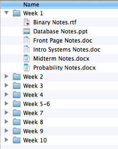
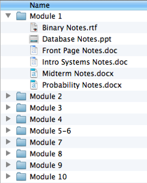
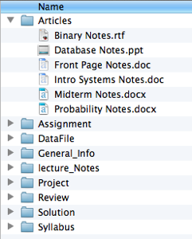
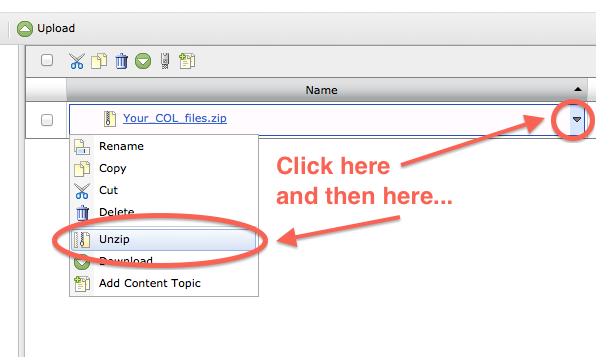

Files organized by Week
Files organized by Module
Files organized by Topic
Unzipping in D2L (Steps 8-10)
You will be creating new D2L Modules that correspond to the folders in your ZIP file. In D2L, folders are called "modules" and files are called "topics."
Repeat steps 2-5 for each module/folder